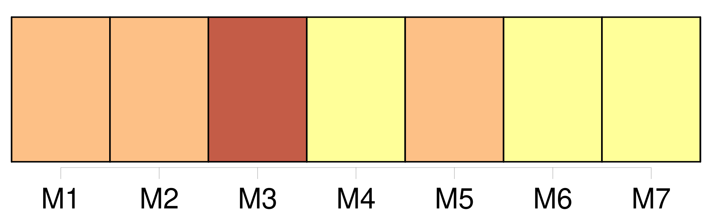
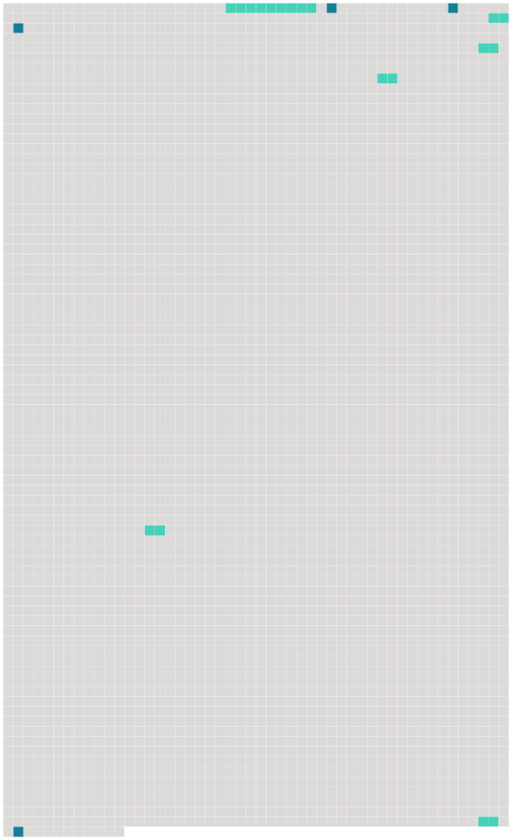

Longueur nb maillons : 10 mentions |
 |
De nouveaux tintements de cloches amènent un garde, et puis un autre ; et, environ une demi-heure plus tard, [celui que l'on appelle ici Monsieur le capitano] , [qui] , après maintes consultations, maints chuchotements à l'oreille de [son] lieutenant, dit que nous pouvions prendre terre. [1 phrases] À ce moment, un ordre écrit du commandant, de la barque qui venait de nous remorquer fut expédié [au capitano] , [qui] reçut ce papier au bout d'un bâton ; et on alluma du feu, pour le faire passer à travers la fumée avant de le lire. [5 phrases] Nous fûmes conduits juste en face des fenêtres de la maison [du capitano] , où était venue Mme Filippo Filicchi. [5 phrases] [Le capitano] nous a envoyé trois œufs à la coque, une bouteille de vin et quelques tranches de pain. [98 phrases] Le bout du bâton de [notre capitano] avertit mon pauvre William de demeurer à distance, au moindre mouvement qu'il fait vers eux dans l'ardeur de la conversation. [62 phrases] [Notre capitano] dit qu' [il] ne peut rien faire, sans avoir des ordres. |
 |
Il est possible de télécharger la ressource sur la page Ortolang |
Si vous avez des questions ou vous voyez des erreurs, merci d'envoyer un mail à silvia.federzoni89@gmail.com |